Come è organizzata l'app
Dalla home (screenshot sotto) si raggiunge ogni modulo con un clic. Ogni modulo ha una propria pagina con barra di navigazione, form di inserimento e tabelle o grafici sui dati. I dati sono condivisi tra i moduli: i conti creati in "Piano dei Conti" compaiono nei menu di "Movimenti" e "Contabilità Generale"; i centri di costo creati in "Centri di Costo" compaiono nei menu di "Commesse"; i prodotti creati in "Prodotti e Distinta Base" alimentano "Magazzino", "Commesse" e "Costi Standard & Scostamenti".
- Avvia l'app con
start.bat(Windows) oppure backend e frontend separatamente — vedi il file README del progetto. - Apri
http://localhost:3001: la Home elenca i 16 moduli attivi. - Ogni pagina ha un link "Home" (freccia in alto a sinistra) per tornare all'elenco moduli.
Contabilità Generale (moduli 1–10)
Registra i fatti esterni: rapporti con clienti, fornitori, banche e fisco. È il registro legale per bilancio e dichiarazioni — identico all'app Contabilità 2.0.
Contabilità Industriale (moduli 11–16)
Riclassifica gli stessi fatti economici per centro di costo, commessa e prodotto per determinare quanto costa realmente produrre, confrontarlo con lo standard atteso e calcolare la marginalità.
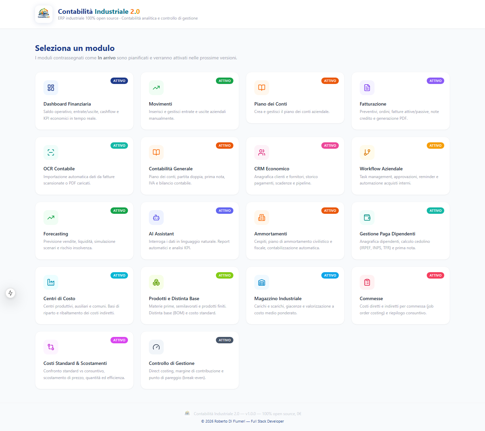
Il colpo d'occhio sui conti aziendali
KPI, andamento mensile entrate/uscite, cashflow cumulativo e indice di liquidità, calcolati in tempo reale da tutti i movimenti registrati.
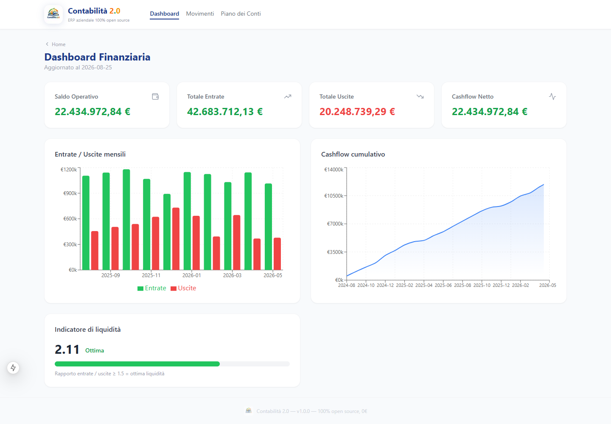
Come si legge
- Indice di liquidità = entrate ÷ uscite. Sopra 1.5 è considerato "ottima" liquidità (barra verde).
- Il grafico Entrate/Uscite mensili copre gli ultimi 12 mesi di movimenti.
- Il Cashflow cumulativo somma progressivamente il saldo netto mese per mese.
- I dati si aggiornano da soli appena registri un nuovo movimento in "Movimenti".
Registrare entrate e uscite
Il registro di cassa dell'azienda: ogni entrata o uscita, con categoria, conto collegato e note libere.
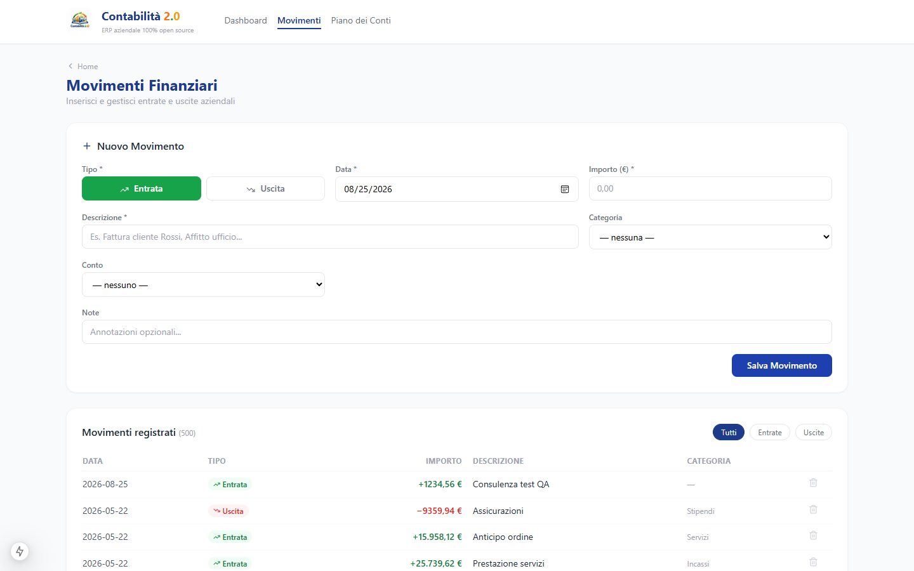
Come si usa
- Scegli Entrata o Uscita, imposta data e importo (obbligatori).
- Aggiungi una descrizione libera e, facoltativamente, categoria, conto e note.
- Premi Salva Movimento: la riga compare subito in cima alla tabella e la Dashboard si aggiorna.
- L'icona del cestino elimina un movimento (con conferma).
Da sapere: i movimenti sono un registro di cassa semplice — non modificano il saldo del "Piano dei Conti", che invece è gestito dalle registrazioni in partita doppia del modulo Contabilità Generale. Questo vale anche per il Break-even del modulo Controllo di Gestione (16): si basa sul Bilancio, non sui Movimenti.
L'elenco dei conti aziendali
Conti di tipo attivo, passivo, costo o ricavo, con codice e saldo iniziale — la base sia dei Movimenti sia della Contabilità Generale, e dei conti che il Controllo di Gestione classifica come fissi o variabili.
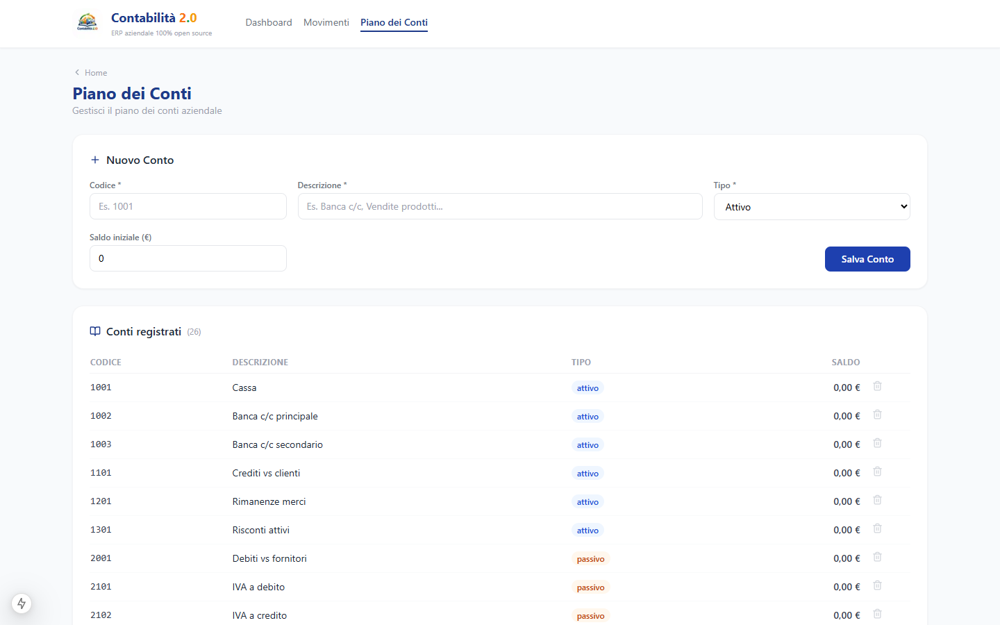
Come si usa
- Assegna un codice univoco (es.
1001) e una descrizione chiara. - Scegli il tipo: attivo, passivo, costo o ricavo — determina come il saldo si muove nelle registrazioni contabili.
- Il saldo si aggiorna automaticamente ogni volta che il conto compare in una registrazione di Contabilità Generale.
Preventivi, ordini, fatture e note credito
Un unico archivio documentale per l'intero ciclo commerciale, con anagrafica clienti/fornitori e generazione PDF pronta per l'invio. La stessa anagrafica clienti alimenta le Commesse (modulo 14).
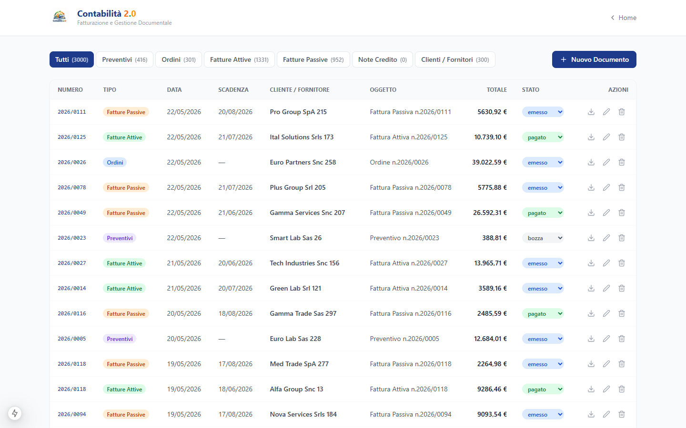
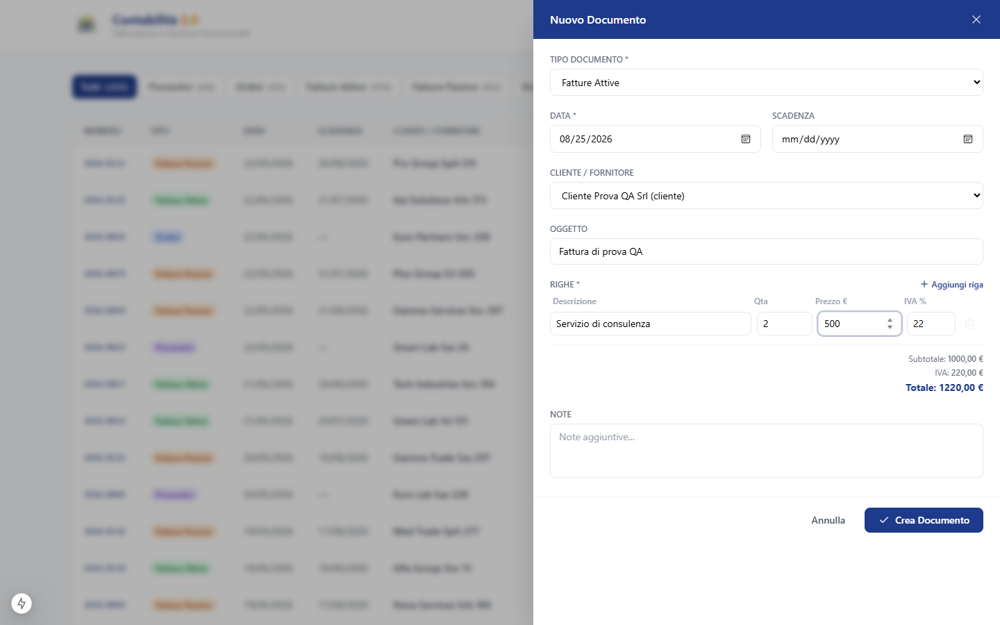
Come si usa
- In "Clienti / Fornitori" crea l'anagrafica (nome, P.IVA/CF, contatti) prima di emettere un documento a suo nome.
- In "Nuovo Documento" scegli il tipo, la data, il cliente/fornitore e aggiungi una o più righe (descrizione, quantità, prezzo, IVA%).
- Cambia lo stato direttamente dal menu a tendina in tabella: bozza → emesso → pagato (o annullato).
- L'icona di download genera il PDF del documento, pronto per l'invio al cliente.
Importare dati da fatture scansionate o PDF
Carica una fattura fornitore: l'app estrae automaticamente P.IVA, numero, data, importi e aliquota IVA.
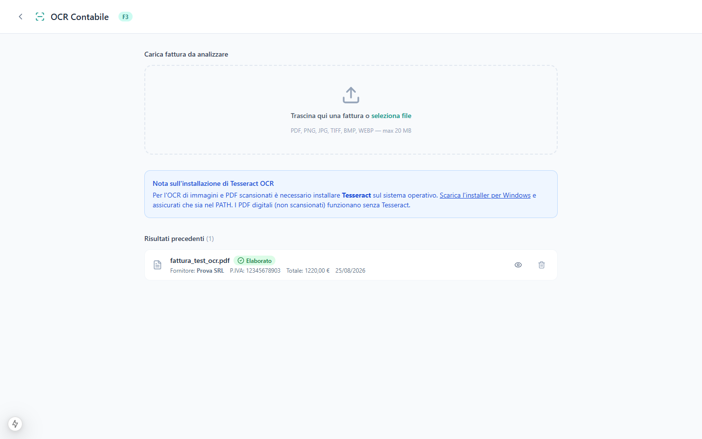
Come si usa
- Trascina il file (PDF, PNG, JPG, TIFF, BMP, WEBP — max 20 MB) o selezionalo manualmente.
- I PDF con testo digitale vengono letti direttamente, senza bisogno di software aggiuntivo.
- Per l'OCR di immagini o scansioni serve Tesseract OCR installato sul sistema operativo (link al pacchetto nella pagina stessa).
- Verifica sempre i campi estratti prima di usarli per creare un documento: eventuali campi non riconosciuti vanno completati a mano.
Partita doppia, bilancio e liquidazione IVA
Il motore contabile vero e proprio: prima nota con registrazioni in partita doppia, bilancio di verifica e calcolo IVA per periodo. I saldi che qui si formano sono la fonte del Break-even aziendale nel modulo Controllo di Gestione (16).
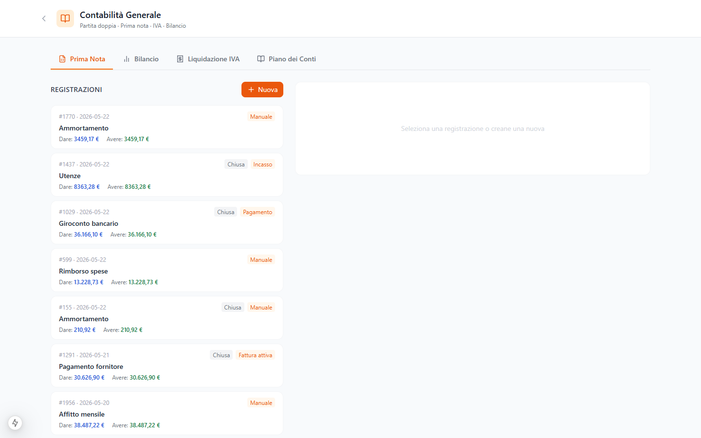
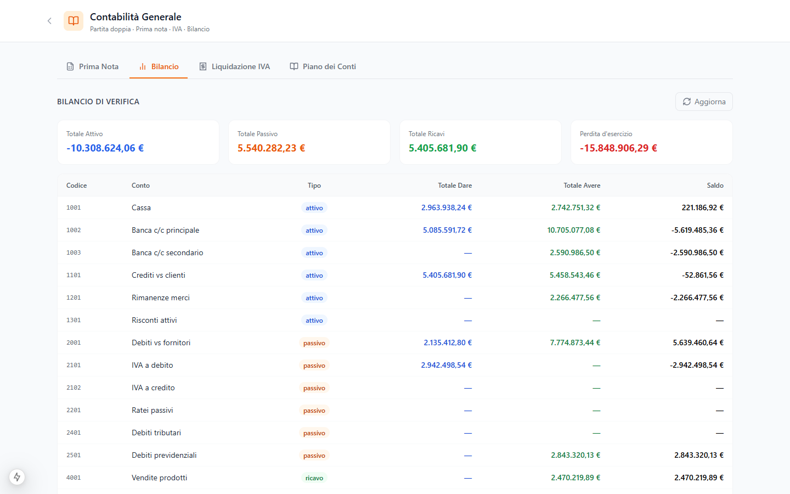
Come si usa
- In "Prima Nota" crea una registrazione: ogni riga indica un conto e un importo a Dare o ad Avere.
- Il totale a Dare deve sempre coincidere con il totale ad Avere — l'app rifiuta registrazioni non bilanciate.
- Una volta salvata, la registrazione aggiorna subito il saldo dei conti coinvolti in "Piano dei Conti" e nel "Bilancio".
- In "Liquidazione IVA" imposta un intervallo di date per calcolare IVA a credito, a debito e il saldo da versare.
- "Chiudi" blocca una registrazione da modifiche future; una registrazione chiusa non può più essere eliminata.
Clienti, fornitori, scadenze e pipeline
Anagrafica condivisa con la Fatturazione, più affidabilità di pagamento, scadenzario e pipeline commerciale.
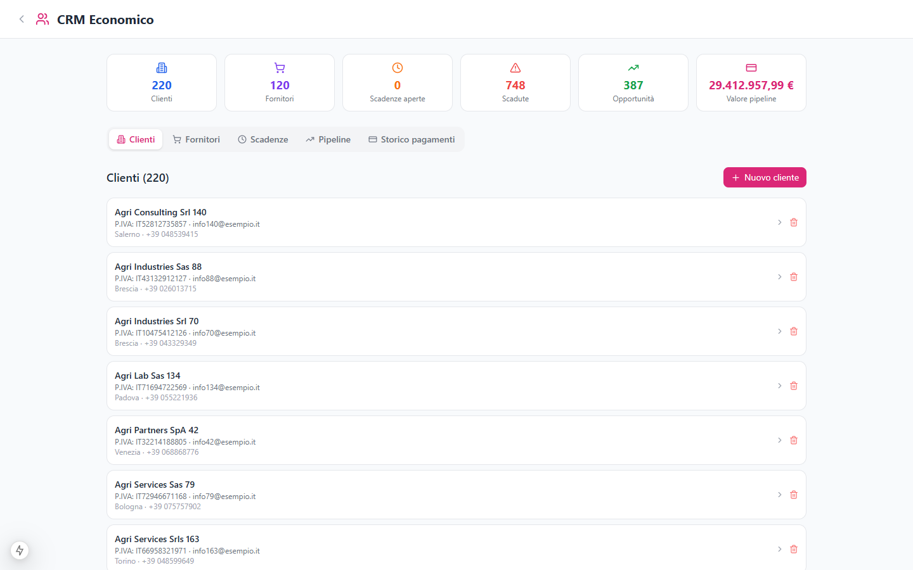
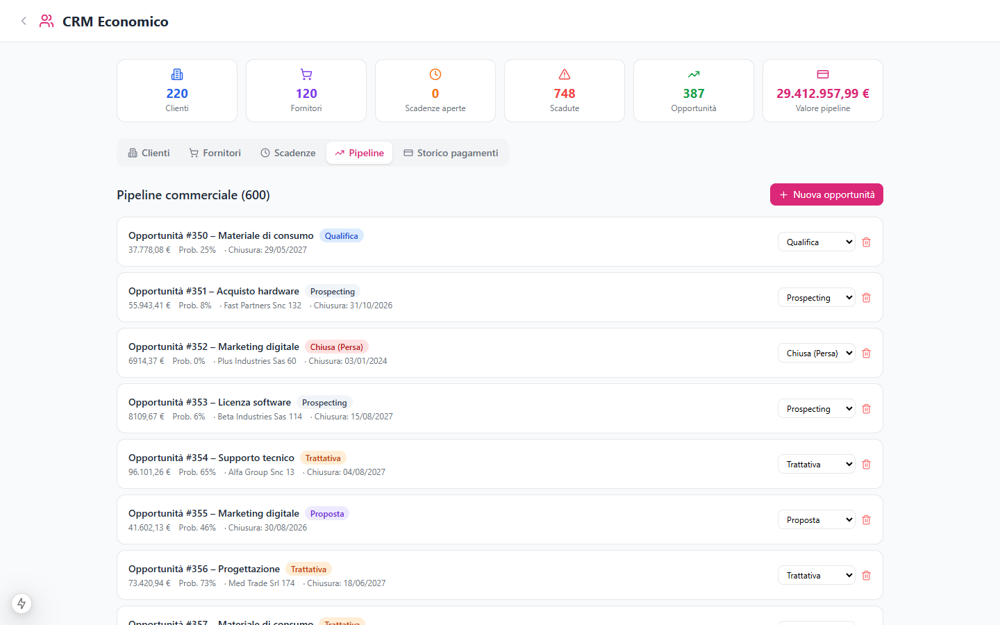
Come si usa
- Le tab in alto passano tra Clienti, Fornitori, Scadenze, Pipeline e Storico pagamenti.
- Il punteggio di affidabilità (0–100) si calcola sullo storico pagamenti: parte da 100 e scende con i ritardi registrati.
- In "Scadenze" registra incassi e pagamenti attesi con data e importo, per tenere sotto controllo cosa scade a breve.
- In "Pipeline" traccia le trattative commerciali in corso e il loro valore stimato per fase.
Da sapere: un cliente senza ancora pagamenti registrati parte con punteggio 100 ("Ottimo") per assenza di segnali negativi, non perché sia stato verificato — è normale vederlo su anagrafiche appena create.
Task, approvazioni multi-livello e reminder
Gestione attività interne con quattro tipologie: task semplice, approvazione a più passi, reminder e richiesta di acquisto.
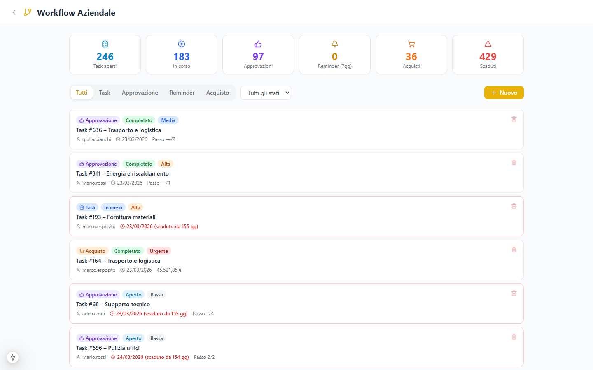
Come si usa
- Crea un task scegliendo tipo, priorità, assegnatario ed eventuale scadenza.
- Per un task di tipo Approvazione, aggiungi uno o più passi con l'approvatore responsabile di ciascuno.
- Ogni passo va approvato in ordine: il task passa automaticamente ad "Approvato" solo quando l'ultimo passo è confermato — un rifiuto in qualsiasi passo chiude subito il task come "Rifiutato".
- Lo stato di ogni task (aperto, in corso, completato, scaduto…) è sempre visibile come etichetta colorata.
Previsioni su vendite, liquidità e rischio
Proiezioni calcolate sui dati storici reali: andamento vendite, copertura di liquidità, scenari e punteggio di rischio insolvenza.
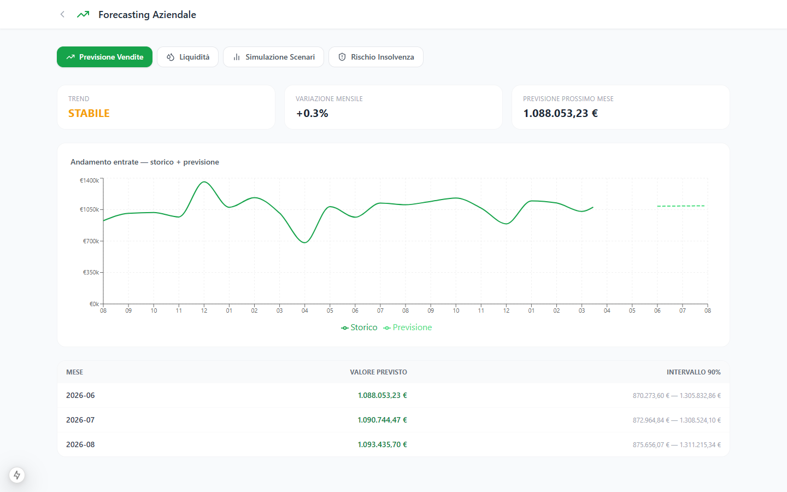
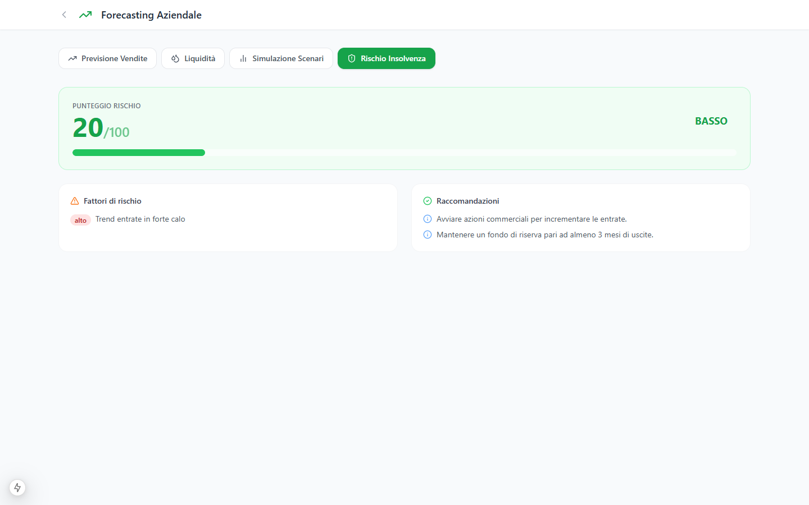
Come si usa
- Le quattro tab (Previsione Vendite, Liquidità, Simulazione Scenari, Rischio Insolvenza) condividono lo stesso storico di movimenti.
- "Simulazione Scenari" confronta un caso ottimistico, base e pessimistico rispetto alla media storica del cashflow.
- Più dati storici sono presenti, più le proiezioni sono affidabili — con pochi movimenti l'app mostra comunque un risultato, ma va interpretato con cautela.
Fare domande in linguaggio naturale sui dati
Un assistente conversazionale che risponde usando i dati reali dell'azienda, eseguito interamente in locale tramite Ollama — nessun dato esce dal computer.
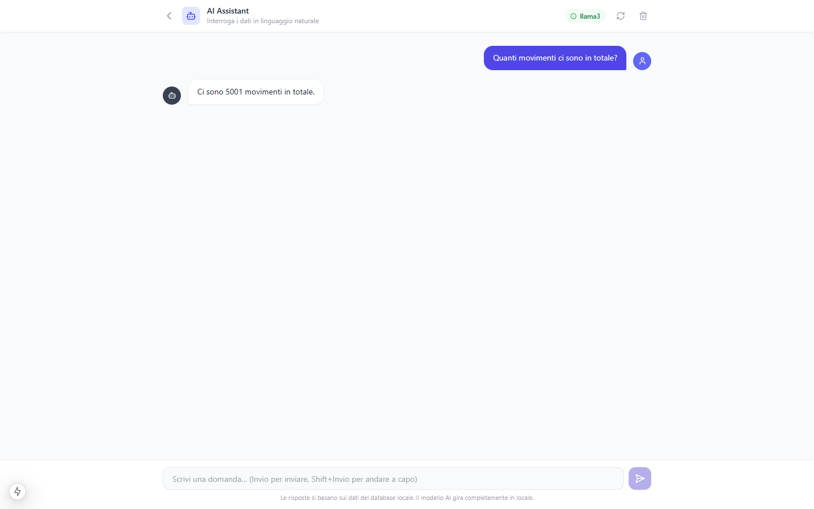
Come si usa
- Il badge in alto a destra mostra se il modello AI locale (Ollama) è online o offline.
- Scrivi una domanda libera o usa uno dei suggerimenti rapidi in basso.
- La risposta arriva in streaming, parola per parola; il pulsante quadrato la interrompe se necessario.
- L'icona di refresh apre una nuova conversazione; il cestino cancella la cronologia della sessione corrente.
Da sapere: se Ollama non è installato o non è in esecuzione, il badge mostra "Offline" e l'assistente risponde spiegando come avviarlo — il resto dell'app continua a funzionare normalmente.
Centri produttivi, ausiliari e il ribaltamento dei costi indiretti
Il primo mattone della contabilità industriale: dove si sostengono i costi interni. Un centro può essere produttivo (es. reparto Assemblaggio), ausiliario (es. Manutenzione, che serve i reparti produttivi) o comune (es. Direzione). Le basi di riparto permettono di ribaltare un costo indiretto sostenuto da un centro sugli altri centri, in proporzione a un driver misurabile (ore macchina, mq, kWh...).
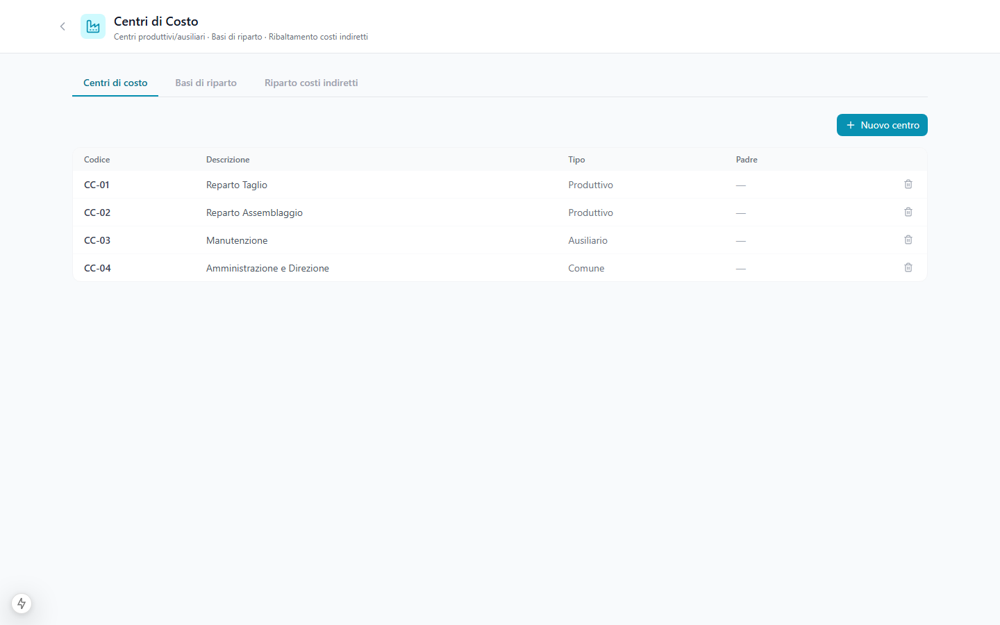
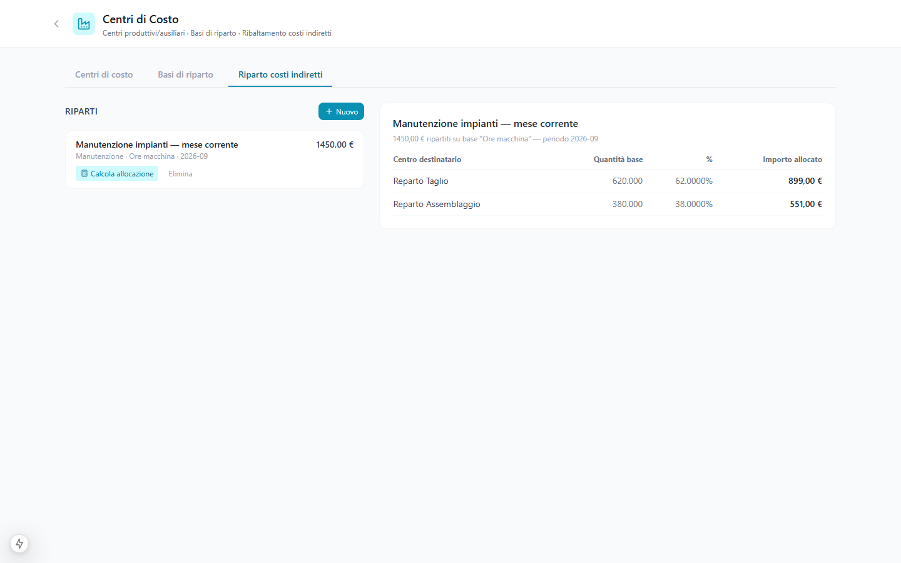
Come si usa
- In "Centri di costo" crea i centri dell'azienda, scegliendo il tipo e — se vuoi una gerarchia — un centro padre.
- In "Basi di riparto" definisci i driver (es. "Ore macchina", unità di misura "ore") e poi registra, per periodo
YYYY-MM, quanto ne ha consumato ciascun centro destinatario. - In "Riparto costi indiretti" crea un riparto: descrizione, centro che ha sostenuto il costo, importo totale, base di riparto e periodo.
- Clicca "Calcola allocazione": l'app ripartisce l'importo sui centri che hanno un valore registrato per quella base/periodo (esclude il centro di origine), proporzionalmente al loro consumo.
Da sapere: il calcolo è un riparto a singolo livello (un costo, una base, una tornata di centri destinatari) — per ribaltamenti a cascata su più livelli (prima i centri ausiliari sui produttivi, poi i produttivi sui prodotti) ripeti l'operazione un centro alla volta.
Materie prime, semilavorati, prodotti finiti e costo standard
L'anagrafica di tutto ciò che entra nella produzione. Ogni materia prima ha un prezzo standard; ogni semilavorato o prodotto finito ha una distinta base (BOM) — l'elenco dei componenti e delle quantità necessarie per produrne 1 unità — più manodopera e indiretti standard. Il costo standard si calcola ricorsivamente: se un prodotto finito usa un semilavorato, il costo standard pieno di quel semilavorato (materiale + manodopera + indiretti) entra nel calcolo, non solo il suo prezzo di listino.
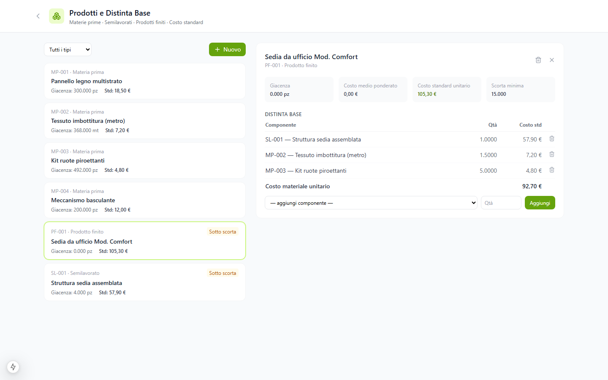
Come si usa
- Crea prima le materie prime, indicando il loro prezzo standard di acquisto.
- Crea i semilavorati e i prodotti finiti, indicando ore di manodopera standard, costo orario standard e quota di indiretti standard per unità.
- Apri il dettaglio di un semilavorato/prodotto finito e in "Distinta base" aggiungi i componenti (materie prime o altri semilavorati) con la relativa quantità per unità.
- Il "Costo standard unitario" mostrato in alto si aggiorna automaticamente sommando materiale (dalla distinta base), manodopera e indiretti.
Da sapere: "Sotto scorta" appare quando la giacenza reale (colonna Magazzino) è inferiore alla scorta minima impostata — indipendentemente dal costo standard, che è un valore di riferimento, non una giacenza.
Carichi, scarichi e valorizzazione a costo medio ponderato
Ogni carico (acquisto o produzione interna) e scarico (consumo) di materie prime, semilavorati o prodotti finiti. Il costo medio ponderato si ricalcola automaticamente a ogni carico; gli scarichi vengono sempre valorizzati al costo medio corrente, così la giacenza resta sempre coerente col suo valore.
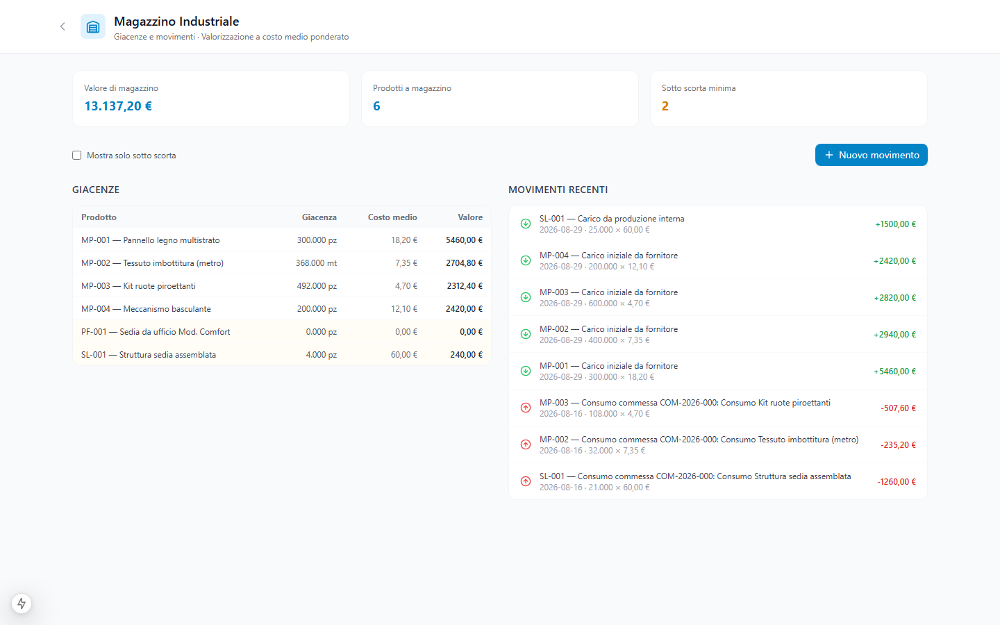
Come si usa
- Clicca "Nuovo movimento", scegli il prodotto e il tipo: Carico (richiede il costo unitario di acquisto/produzione) o Scarico (valorizzato automaticamente al costo medio ponderato).
- Uno scarico viene rifiutato se la quantità richiesta supera la giacenza disponibile.
- La spunta "Mostra solo sotto scorta" filtra rapidamente i prodotti da riordinare.
Da sapere: quando registri un costo materiale in una Commessa (modulo 14), il relativo scarico di magazzino viene creato automaticamente — non serve registrarlo due volte qui.
Costi diretti e indiretti per commessa (job order costing)
Ogni commessa accumula i propri costi — materiale, manodopera diretta, quote di indiretti — fino alla chiusura. È l'unità di calcolo su cui si basa poi l'Analisi degli Scostamenti (modulo 15).
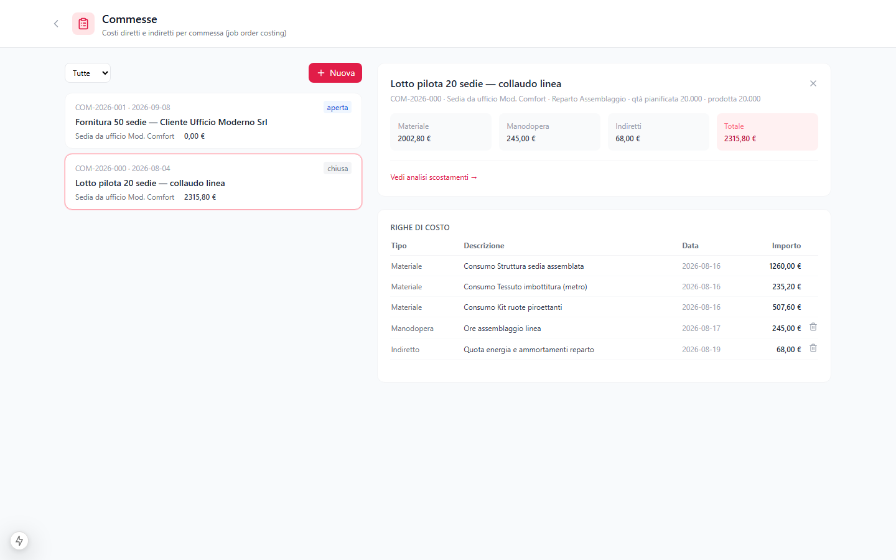
Come si usa
- Clicca "Nuova": scegli il prodotto finito da realizzare, il centro di costo responsabile e la quantità pianificata.
- Aggiungi righe di costo: Materiale (seleziona il componente e la quantità consumata — scarica automaticamente il magazzino al costo medio corrente), Manodopera (ore e costo orario) o Indiretto (importo diretto, es. una quota da un riparto).
- Le righe di costo materiale non sono eliminabili singolarmente (hanno già scaricato il magazzino): per una rettifica, registra un carico di rettifica in Magazzino.
- Alla fine della produzione, clicca "Chiudi commessa" indicando la quantità effettivamente prodotta — necessaria per un confronto preciso con lo standard nel modulo Scostamenti.
Confrontare lo standard atteso con il consuntivo
Per ogni commessa, confronta il costo standard (dalla distinta base e dai parametri di manodopera/indiretti del prodotto, moltiplicati per la quantità di riferimento) con il costo consuntivo realmente registrato. Per materiale e manodopera lo scostamento si scompone in scostamento di prezzo/tariffa (hai pagato di più o di meno del previsto) ed scostamento di quantità/efficienza (hai consumato più o meno del previsto).
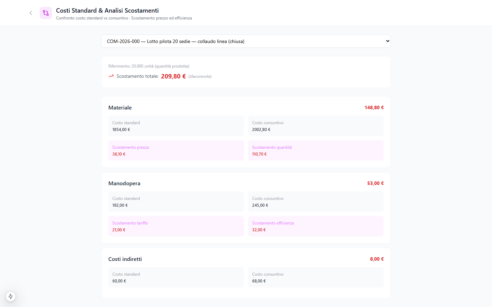
Come si legge
- Seleziona una commessa dal menu — funziona sia per commesse aperte (confronta con la quantità pianificata) sia chiuse (confronta con la quantità effettivamente prodotta, più preciso).
- Convenzione dei segni: positivo = sfavorevole (il consuntivo è costato più dello standard), negativo = favorevole.
- Per materiale e manodopera, scostamento di prezzo + scostamento di quantità = scostamento totale della voce.
- Per gli indiretti lo scostamento è mostrato in blocco unico (spesa + volume), senza ulteriore scomposizione.
Da sapere: la scomposizione prezzo/quantità è precisa quando i consumi vengono registrati allo stesso livello della distinta base del prodotto (es. se la distinta base prevede "1 struttura assemblata", registra il consumo di "struttura", non dei suoi singoli componenti) — il totale resta comunque sempre corretto in ogni caso.
Direct costing, margine di contribuzione, punto di pareggio
La vista d'insieme: classificando i conti di costo come fissi o variabili, l'app calcola il margine di contribuzione aziendale e il punto di pareggio (break-even) — sia a livello di azienda sia per singolo prodotto finito con prezzo di vendita impostato.
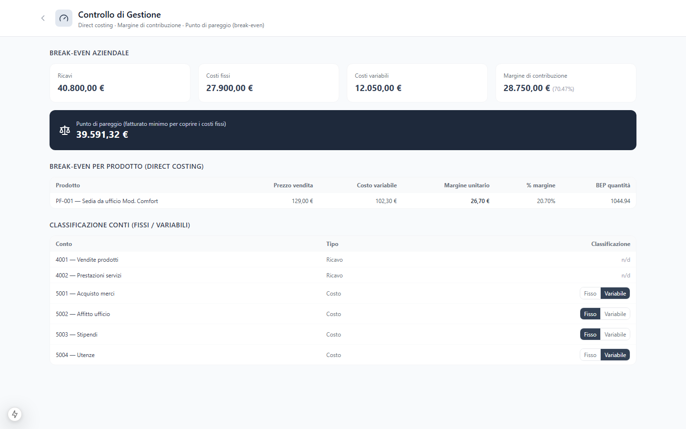
Come si usa
- In fondo alla pagina, classifica ogni conto di costo come Fisso (non varia con i volumi, es. affitto, stipendi) o Variabile (varia con i volumi, es. acquisto merci, utenze).
- Il riquadro "Break-even aziendale" si aggiorna: margine di contribuzione = ricavi − costi variabili; punto di pareggio = costi fissi ÷ (margine di contribuzione ÷ ricavi).
- "Break-even per prodotto" mostra, per ogni prodotto finito con un prezzo di vendita impostato, il margine di contribuzione unitario e quante unità servirebbe vendere (da sole) per coprire i costi fissi aziendali.
Da sapere: i totali "Ricavi", "Costi fissi" e "Costi variabili" leggono i saldi dei conti dal Bilancio di Contabilità Generale (modulo 6), non dai Movimenti di cassa: se non hai ancora registrato nessuna scrittura in Prima Nota, qui vedrai tutto a zero anche con molti Movimenti inseriti.
Note e limiti noti
Punti emersi durante i test della versione corrente, utili da tenere presenti in uso quotidiano — sia per i moduli aziendali condivisi sia per quelli di contabilità industriale.
- Movimenti e saldo del Piano dei Conti
- I movimenti registrati in "Movimenti" non modificano il saldo dei conti: quel saldo si aggiorna solo tramite le registrazioni in partita doppia di "Contabilità Generale". Sono due registri distinti, per progettazione — e il Break-even (16) dipende dal secondo, non dal primo.
- Elenchi molto lunghi
- Le liste di Movimenti, Fatturazione e Workflow mostrano fino a 500 righe per pagina, senza un controllo di paginazione visibile in interfaccia. Con volumi molto elevati di dati, la pagina può diventare lunga da scorrere.
- Chiusura della chat AI a metà risposta
- Se chiudi la scheda o cambi pagina mentre l'assistente sta ancora generando una risposta, può comparire un avviso tecnico nei log del backend; non causa perdita di dati, ma è preferibile attendere il completamento della risposta o usare il pulsante di interruzione.
- OCR di immagini e scansioni
- Richiede Tesseract OCR installato separatamente sul sistema operativo. Senza Tesseract, i PDF con testo digitale continuano a funzionare correttamente; solo l'estrazione da immagini/scansioni non è disponibile.
- Riparto costi indiretti a singolo livello
- Il modulo Centri di Costo (11) ripartisce un costo indiretto in un solo passaggio, sui centri che hanno un valore registrato per quella base/periodo. Non implementa un ribaltamento a cascata automatico multi-livello (ausiliari → produttivi → prodotti) né una vera Activity Based Costing: per scenari più complessi, ripeti l'operazione un centro alla volta.
- Scomposizione prezzo/quantità e livello della distinta base
- Nel modulo Scostamenti (15), lo scostamento totale per commessa è sempre corretto. La sua scomposizione in prezzo e quantità è precisa solo se i consumi materiale vengono registrati allo stesso livello dei componenti diretti in distinta base del prodotto finito (vedi nota nel modulo 15).
- Contabilità industriale extra-contabile
- I moduli 11–16 sono un livello analitico che legge dati dai moduli aziendali (Piano dei Conti, Contabilità Generale, Anagrafiche) ma non genera automaticamente scritture di prima nota per i costi di commessa o magazzino — è una scelta di progetto per evitare doppie contabilizzazioni, coerente con come la contabilità industriale è normalmente usata nelle PMI (strumento di controllo di gestione interno, non obbligatorio per legge).